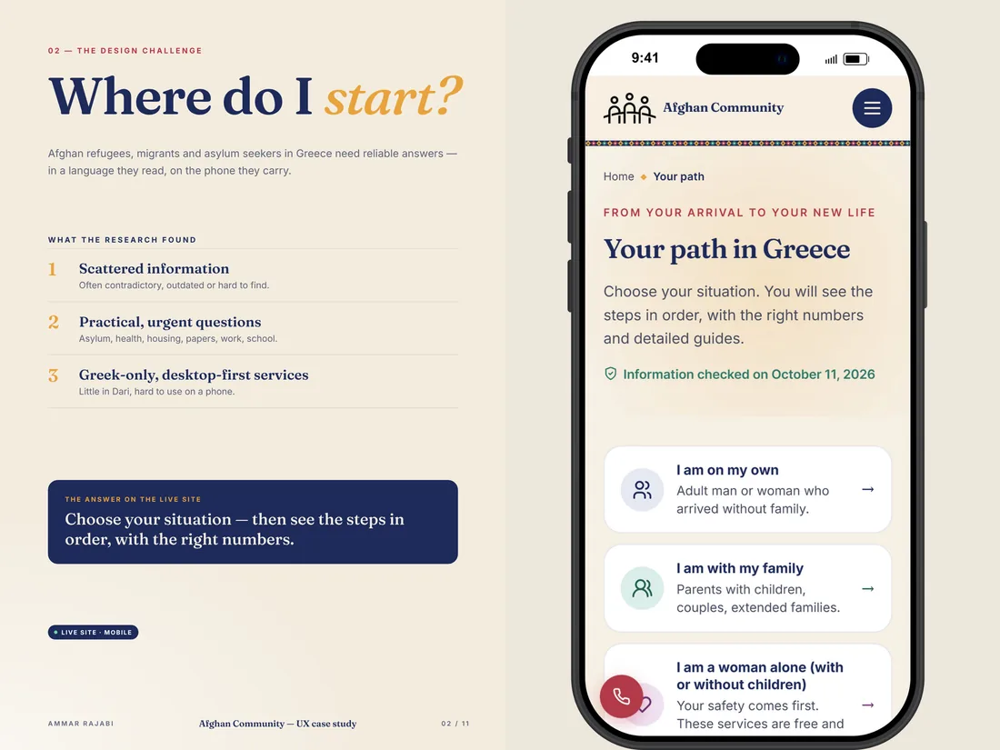
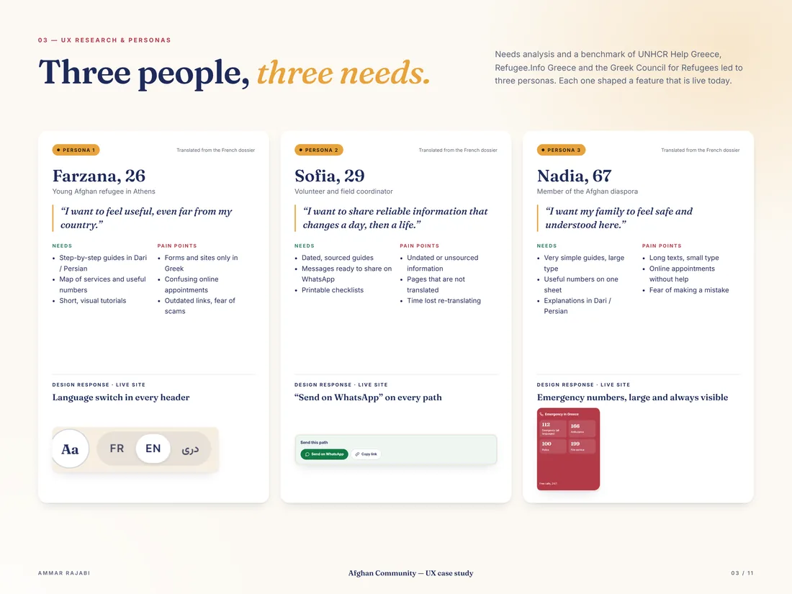
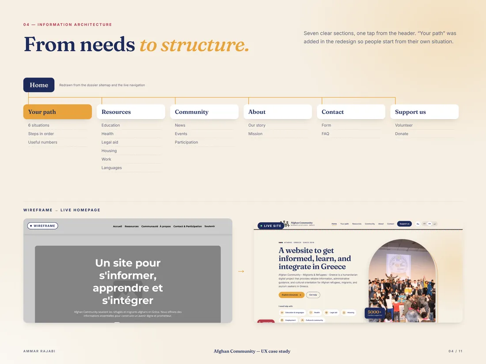
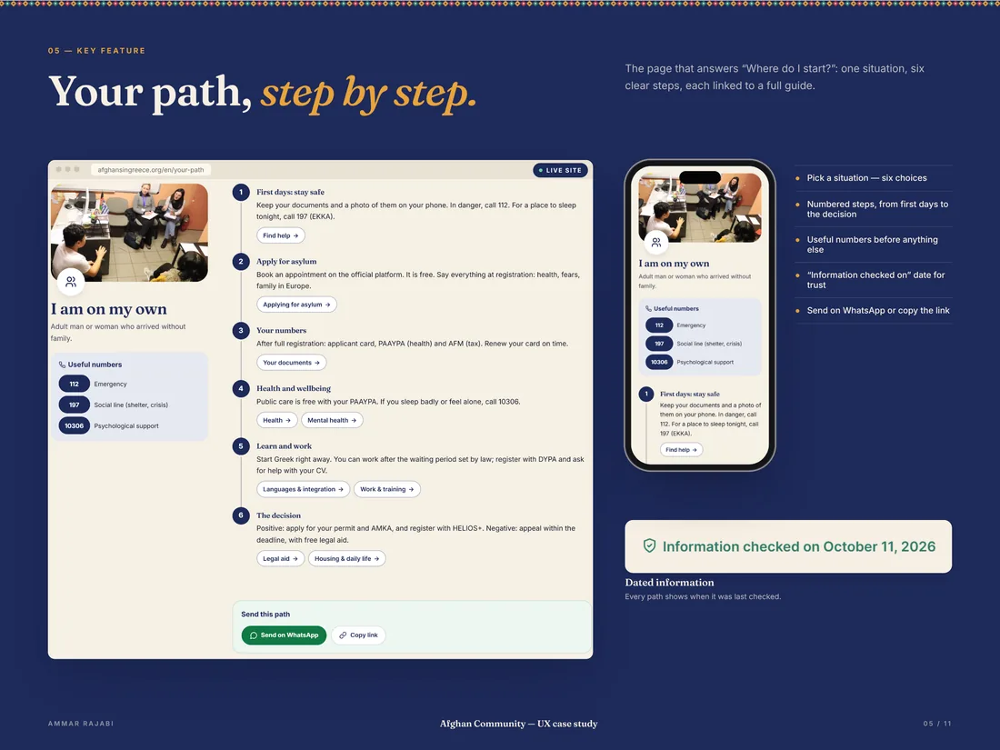
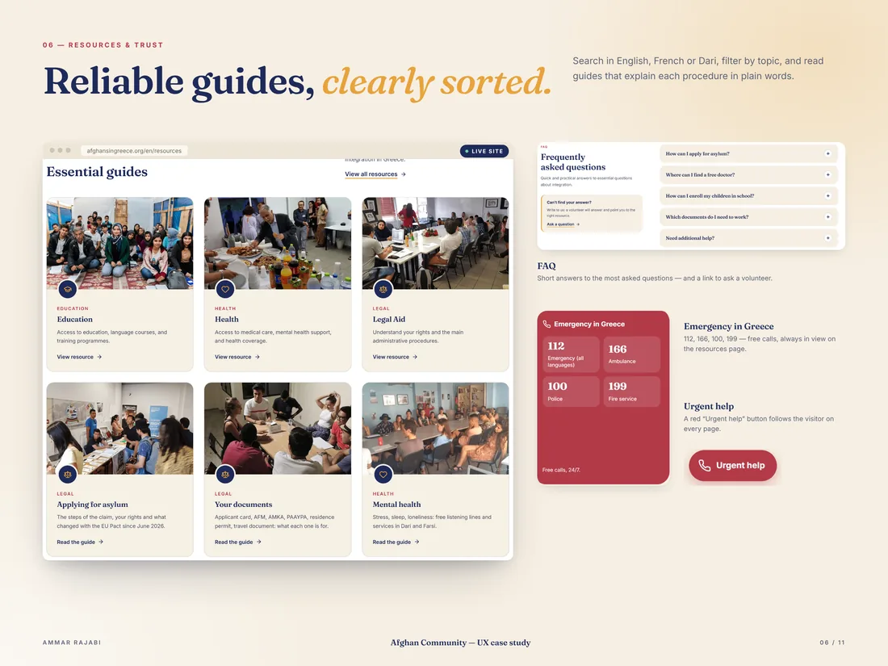
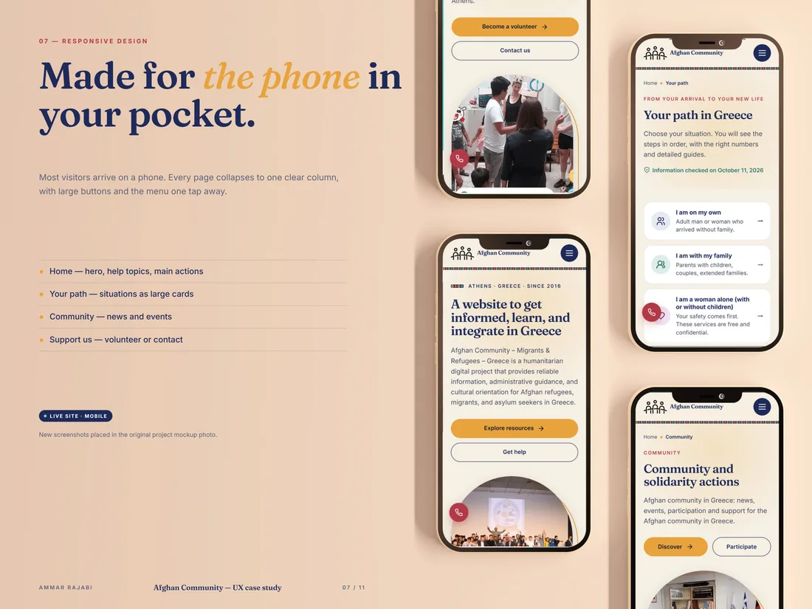
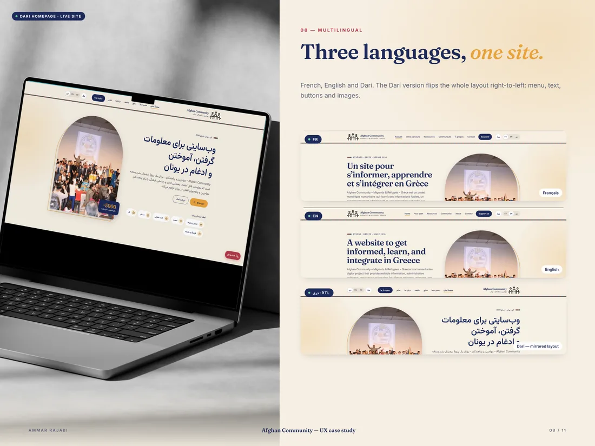
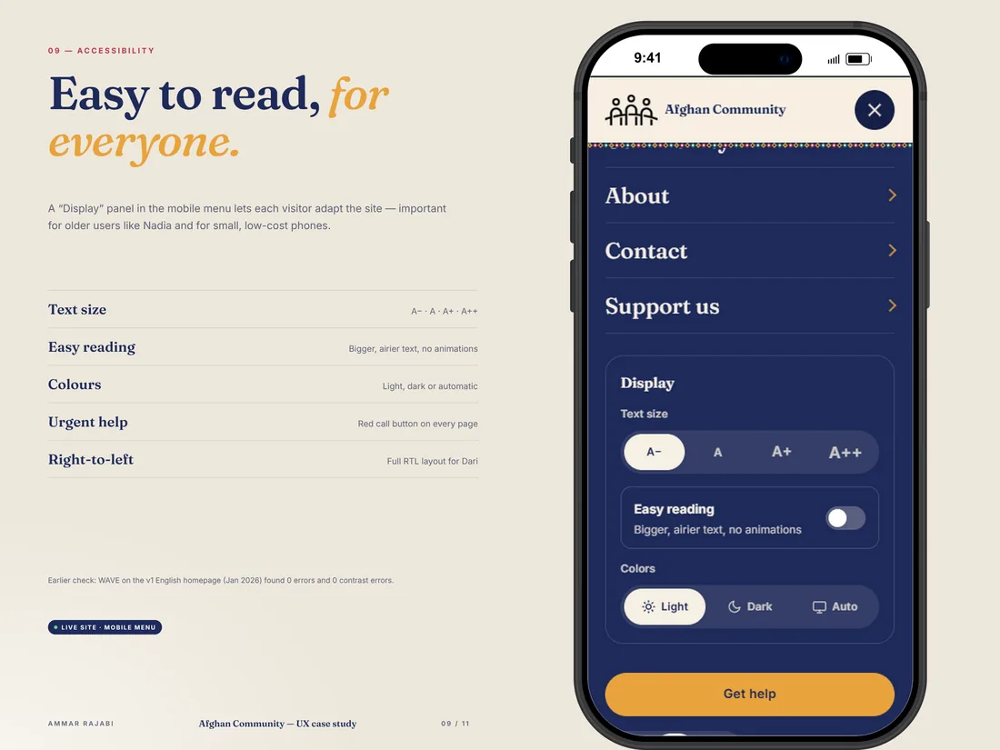
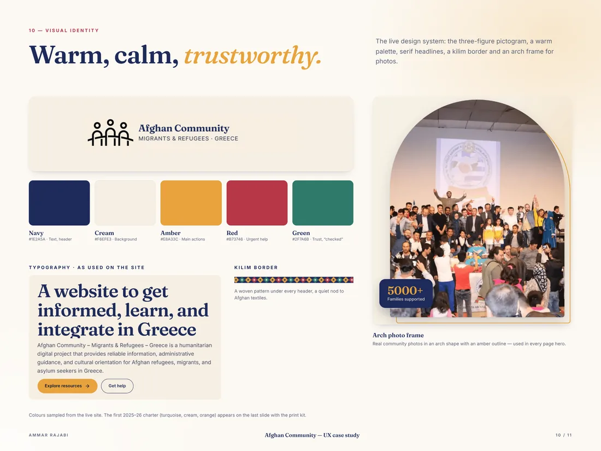
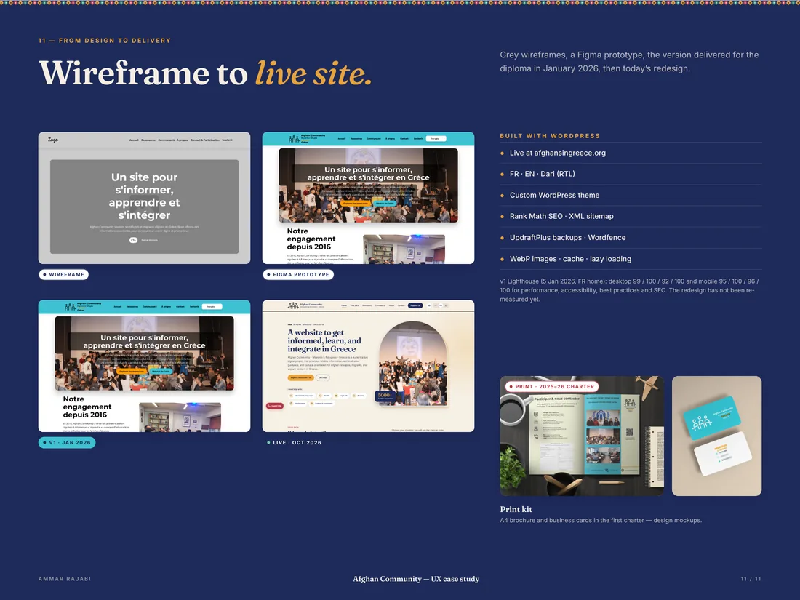

Afghan Community
Designing a trilingual platform for Afghans in Greece, from user research to visual identity and the WordPress website.

In 30 seconds · Real project
- The need
Help Afghan families in Greece find reliable information, often on a phone.
- What I did
User research, architecture, visual identity, trilingual WordPress with Dari (RTL).
- The result
Graduation project for the Level 6 professional title, obtained in 2026.
Key numbers
- 3languages, incl. Dari RTL
- 87dossier pages
- 95mobile PageSpeed performance
- Level 6professional title
The context
Afghan refugees, migrants and families in Greece struggle to find reliable, understandable information. Many only use a phone.
The challenge
Bring scattered resources into one simple, reassuring, mobile-first portal, despite language barriers and different digital skill levels.
My role
I led the whole project: needs, personas, journeys, information architecture, UI design, visual identity, WordPress, SEO, accessibility, print materials and documentation.
01 / 05
Research and structure
Understand the needs, define three personas, then organise the information before designing.

The challenge Scattered information: one clear, mobile-first entry point.

Personas Three personas from the dossier, each linked to a site feature.

Information architecture Site structure and wireframe compared with the live homepage.
02 / 05
The website
A WordPress site in three languages (French, English and Dari, read right to left), built to find the right information fast.

Your path Six situations, numbered steps and useful numbers.

Resources and trust Sorted guides, FAQ, emergency numbers and an urgent-help button.
03 / 05
Mobile and multilingual
One clear column on phones and a mirrored layout for Dari.

Mobile experience Home, path, community and support pages on a phone.

Three languages French, English and Dari, with a right-to-left layout.
04 / 05
Accessibility and identity
Display settings for everyone and a warm, consistent visual system.

Accessibility Text size, easy reading, light or dark mode and urgent help.

Visual identity Logo, colours, type, kilim border and arch frame.
05 / 05
Quality control
The published site was checked with PageSpeed Insights, Lighthouse and WAVE. PageSpeed scores measured on afghansingreece.org in October 2026.
Mobile
- 95Performance
- 100Accessibility
- 100Best practices
- 100SEO
Desktop
- 99Performance
- 100Accessibility
- 100Best practices
- 100SEO

From wireframe to live site Wireframe, Figma prototype, January 2026 version, current site and print kit. The scores inside the image are from the first version (January 2026).
“Ammar understood our community’s needs and turned them into a clear, structured and accessible platform. His work on UX, content, mobile and visual consistency made the project more professional and more useful.”


Contact
A role, a project or a simple question?
I reply in English or French, usually within 48 hours.